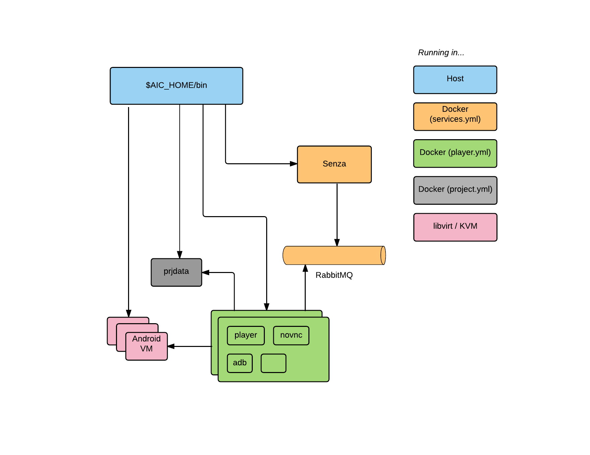

AiC Project
AiC is an Open Source project that facilitates Android application testing. It offers many components to achieve Android virtualization that can run applications and tests, allowing a fast feedback for the application developer.
Two different AiC deployments are proposed:
- Cloud version: Android virtualized machines are deployed within a cloud platform (Open Stack). The user can interact with the Android machine through a web application (also deployed within the cloud platform).
- Local version: Android virtualized machines are deployed locally (in the user machine) through qemu-kvm/libvirt. The user can interact with the Android machine through NoVNC and AiC CLI.
Architecture Cloud

The AiC architecture is divided into four big groups:
- Browser: In the browser section we have one component, the frontend web application.
- AiC Test Services (ATS): AiC Services are composed by many components.
- ATS-LuaAuth: Component responsible for the user authorization.
- ATS-Authentication: Component responsible for the user authentication.
- ATS-Kyaraben: Component responsible for virtual machine orchestration on the cloud platform (Android machine creation and removal). It also handles the database and data docker containers (project information, APKs, test files, etc).
- ATS-Senza: Component that will interact with Android machine emulated sensors and services (GPS, battery, rotation, GSM, etc).
- Docker host: There are many services associated to each virtual Android machine created. The docker host will provide containers with these services, needed by the Android machine to work. One of these containers is player, the interface between Android machine and sensors emitters. Another of these containers is player.camera, a component that handles the Android machine camera input. There is also an extra ATS service that runs on the docker host, which is the ATS-DSLcc, a component that parsers the AiC Testing DSL to Java files.
- OpenStack: Cloud service where virtual Android machines are deployed and all services are hosted. The Android machines images are built with ATS-RomBuild.
All these components can be deployed using AiC ATS build & deployment tools.
Details about each component can be found on its own documentation and project repository.
| Component | Documentation | Github |
|---|---|---|
| ATS-LuaAuth | (NA) | github |
| ATS-Authentication | documentation | github |
| ATS-Kyaraben | documentation | github |
| ATS-Senza | documentation | github |
| player | documentation | github |
| player.camera | documentation | github |
| ATS-DSLcc | documentation | github |
| ATS-RomBuild | documentation | github |
| ATS build & deployment tools | documentation | github |
Architecture Local

AiC Local can be imagined as a simplified version of the Cloud service. It uses the same Android images as in the cloud version but all services will run in the user machine.
We recommend the installation in a modern Linux distribution and it should be able to run Docker 1.10+, and qemu-kvm through libvirt. The installation details are available at documentation and github repository.
OpenGapps
Some Android applications depend on Google Apps (GApps). Documentation with instructions to install GApps in the AiC Android roms are available at documentation and github repository.